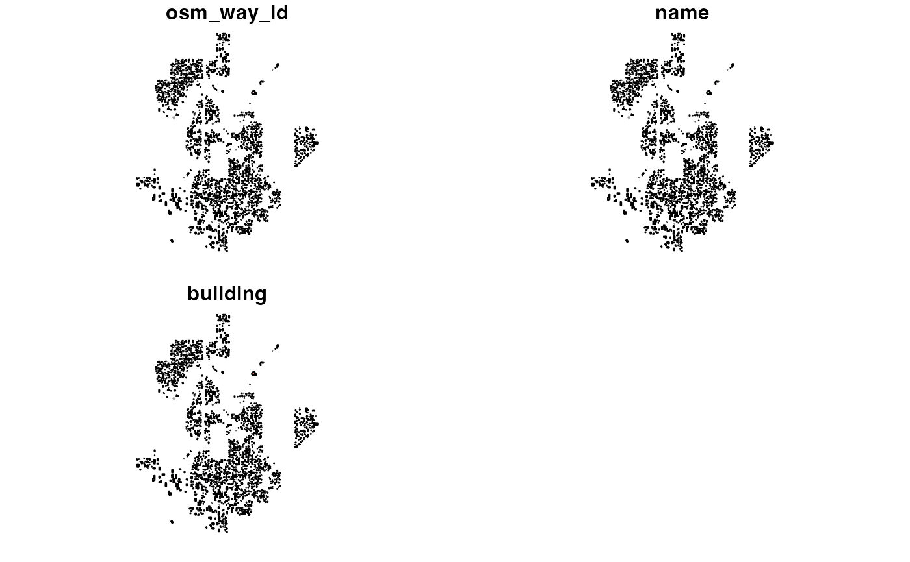

Each row of this table contains a building that exists within a
zone in the montlake_zones table.
A sf dataframe with columns:
OSM ID assigned to each building.
OSM name assigned to each building (might be NA).
OSM building category assigned to each building.
Simple feature collection (sfc) contain multipolygons, each representing the boundaries of a building.
OpenStreetMap
These buildings were retrieved using osmextract::oe_read(). See the code used to
create this data in data-raw/montlake-test-data.R.
library(sf)
names(montlake_buildings)
#> [1] "osm_way_id" "name" "building" "geometry"
head(montlake_buildings$osm_way_id)
#> [1] "25790320" "37057155" "37426808" "41789150" "52136489" "52137309"
head(montlake_buildings$name)
#> [1] "Seattle Streetcar Maintenance" "Capitol Hill Library"
#> [3] "NTS Recycling Center" NA
#> [5] NA NA
head(montlake_buildings$building)
#> [1] "yes" "yes" "industrial" "yes" "commercial"
#> [6] "yes"
nrow(montlake_buildings)
#> [1] 2848
plot(montlake_buildings)
